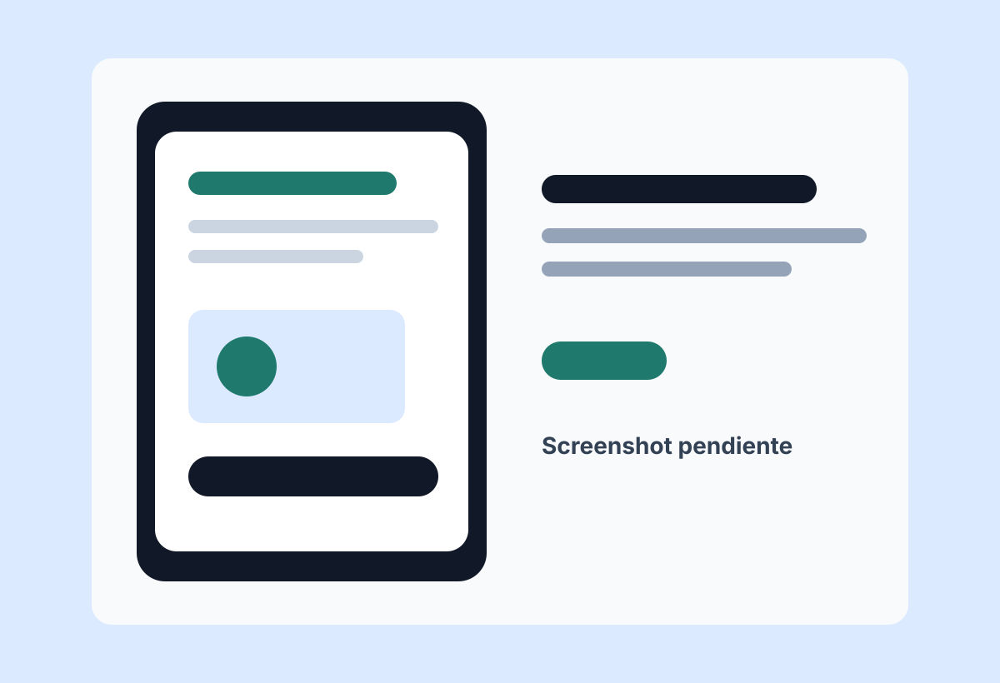
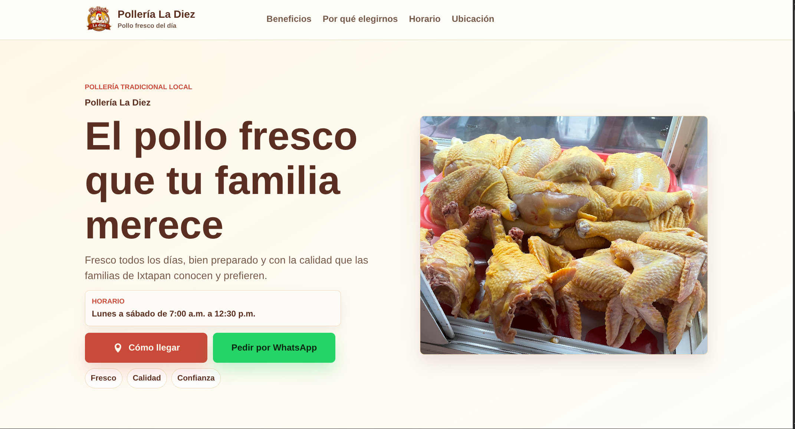
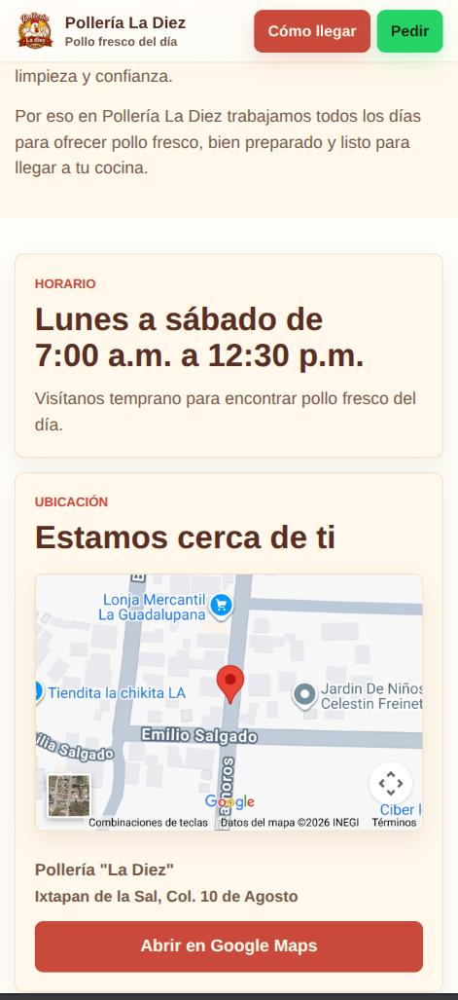
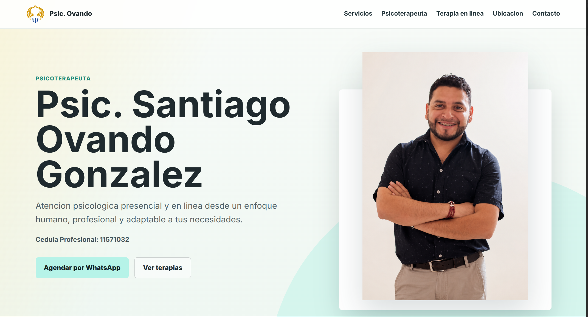
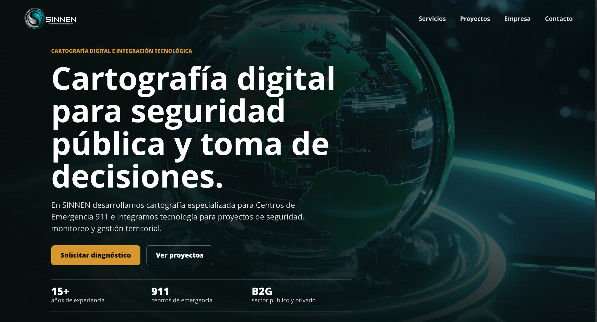
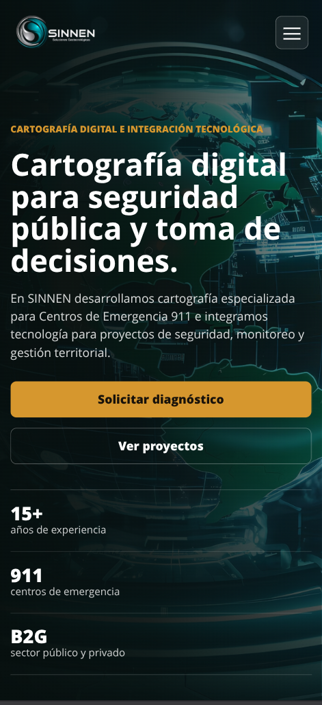
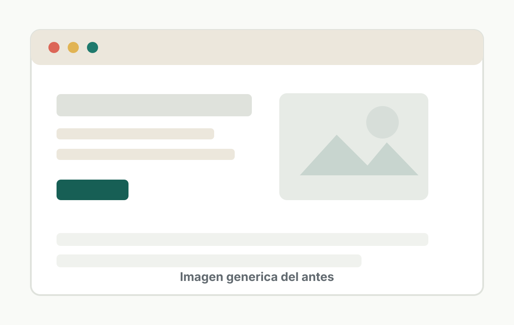

Especialista CAD
Sistema de comunicación 9-1-1
Especialista CAD – Sistema 9-1-1 | Desarrollador Web y Mobile
Trabajo como Implant en C5 Toluca dando soporte al sistema de comunicación 9-1-1. Además desarrollo aplicaciones móviles y sitios web.
Ingeniero en Sistemas Computacionales. Actualmente trabajo en Pulsiam como Implant en C5 Toluca, brindando soporte al sistema de comunicación del 9-1-1 del Estado de México utilizando Linux y UniVerse. También cuento con experiencia en desarrollo de aplicaciones móviles con Flutter y desarrollo web con HTML, CSS y JavaScript.
Sistema de comunicación 9-1-1
Soporte al sistema y atención a usuarios
Flutter, HTML, CSS y JavaScript
Experiencia actual
Especialista CAD – Sistema 9-1-1 en Pulsiam, asignado como Implant en C5 Toluca.
Actualmente brindo soporte al sistema de comunicación utilizado por el 9-1-1 del Estado de México. Mi trabajo se desarrolla principalmente con Linux y UniVerse, colaborando con usuarios del sistema y clientes responsables del proyecto para apoyar la continuidad operativa.
Sistema de comunicación 9-1-1 del Estado de México.
Linux y UniVerse.
Implant en C5 Toluca para Pulsiam.
Usuarios del sistema y clientes responsables del proyecto.
Proyectos
Proyectos donde he trabajado interfaces, estructura visual, experiencia móvil y publicación de sitios web o aplicaciones.

Problema: El proyecto requería una app móvil multiplataforma con interfaces claras y conexión con servicios externos.
Qué hice: Desarrollé pantallas en Flutter, integré funcionalidades, consumo de APIs y estructura de estado con Provider/MVVM.
Resultado: Poner las 3 apps cuando se tengan las capturas


Problema: El negocio necesitaba una presencia digital simple para mostrar información básica y facilitar el contacto desde celular.
Qué hice: Desarrollé una landing page responsiva con información del negocio, ubicación, horario y acceso rápido a WhatsApp.
Resultado: El negocio cuenta con una página clara, rápida y fácil de compartir con clientes.

Problema: El sitio anterior estaba hecho en Wix, no se adaptaba bien a celular y mostraba desbordes, navegación limitada y una presentación visual poco profesional.
Qué hice: Rediseñé y desarrollé una landing page responsiva con servicios, perfil profesional, terapia en línea, ubicación y llamadas directas a contacto.
Resultado: El sitio ahora comunica confianza desde el primer vistazo, funciona mejor en móvil y facilita que nuevos pacientes agenden por WhatsApp.


Problema: El sitio anterior en Wix no era responsivo, generaba desplazamiento horizontal en celular y tenía fallos visibles de márgenes y navegación.
Qué hice: Realicé una propuesta de rediseño enfocada en impacto visual, estructura clara, navegación estable y adaptación real a escritorio y móvil.
Resultado: La landing presenta mejor a la empresa, evita desbordes y permite que los visitantes entiendan los servicios desde cualquier dispositivo.
Experiencia complementaria
Desarrollo de aplicaciones móviles en EcTeam con Flutter y Dart, integración de APIs REST, MVVM, Provider, Git y GitHub.
Desarrollo de landing pages para pequeños negocios, enfocadas en presencia digital, experiencia móvil y contacto con clientes.
Trabajo previo en Data Express Latinoamérica desarrollando funcionalidades para CRM con ASP.NET MVC, Entity Framework, autenticación, roles, HTML, CSS, JavaScript y SQL Server.
Habilidades
Ingeniería en Sistemas Computacionales, Tecnológico de Estudios Superiores de Villa Guerrero. Egresado en proceso de titulación.
Contacto
Antes y después
